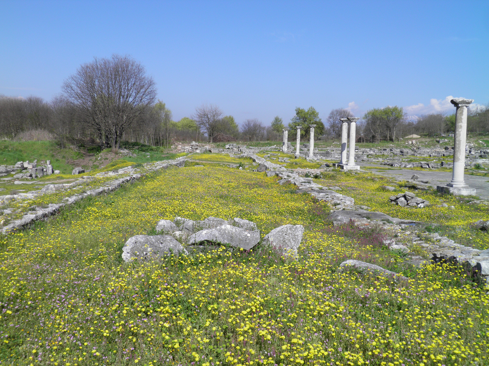

Philippi Forum

- Find Name
- Philippi Forum
- Description
- The forum of Philippi, a Roman colony on the Via Egnatia in Macedonia, excavated by the French School at Athens from 1914. The visible forum is the second-century Roman rebuilding of the Hellenistic marketplace into which Paul and Silas were dragged in Acts 16:19-22. A small vaulted cell in the complex is traditionally shown as the prison where they were held overnight, but that identification is tradition, not an excavated certainty: the forum itself is secure, the prison cell is not.
- Historical Period
- Roman
- Evidence Class
- Contextual
- Interpretations
- Scholars agree the forum is Philippi's civic centre and that Acts 16's picture of a Roman colony with magistrates fits the city's Latin epigraphy and colonial status. The 'prison of Paul' shown to visitors is a traditional identification; no inscription ties that cell to Paul and Silas, so this entry claims the forum, not the cell.
- Alternative Names
- Forum of Philippi
- Related Places
- Related Books
- Related People
- Scripture Illuminated
- Biblical Significance
- Philippi was the first place in Europe where the gospel was preached: Lydia and her household were baptised by the riverside, Paul and Silas were beaten and jailed and the jailer and his household believed, and the church there later received Paul's letter to the Philippians. The forum stones make the civic setting of Acts 16 concrete — a Roman colony with magistrates, a marketplace, and a prison.
- Artifact Date
- 2nd century AD (Roman forum over an earlier Hellenistic agora)
- Current Location
- In situ, Archaeological Site of Philippi
- Date Discovered
- 1914
- Discovery Location
- Philippi, near Krinides, Greece
- Timeline Era
- Early Church
Awaiting Review Not yet checked against scholarly sources. Treat its claims as provisional until this entry is reviewed. About verification
Last reviewed: not yet reviewed